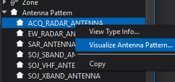
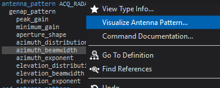
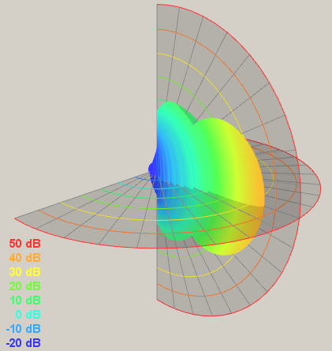
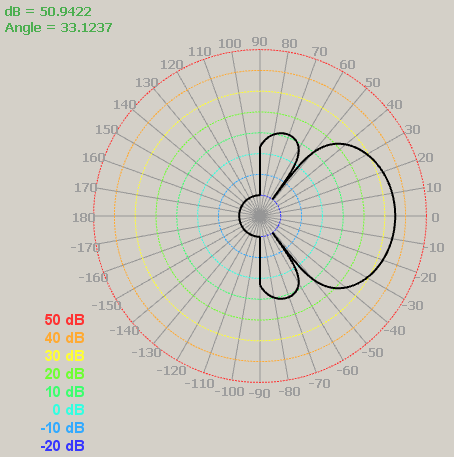
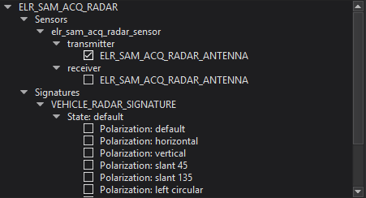
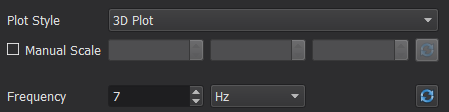
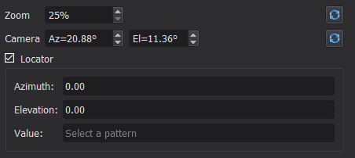
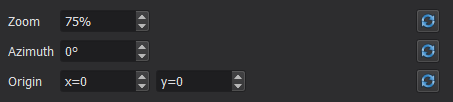
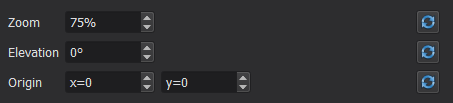

Pattern Visualization - Wizard¶
Overview¶
The Pattern Visualizer is a Wizard plugin that can be used to visualize and examine patterns and signatures in AFSIM input files.
The plugin can be opened by right-clicking an antenna pattern, signature, or platform type and selecting the “Visualize” option. It can be opened via the same mechanism with platforms.
The plugin can also be opened by right-clicking the name of an antenna pattern, signature, platform, or platform type directly in the text editor and selecting the “Visualize” option.
The Pattern Visualizer comprises the Canvas, the Patterns Tree, and the Display Options.
Canvas¶
Pattern Visualizer displays the pattern information in either 3D or one of two 2D polar representations of the data. The type of display can be selected using the Plot Style control in the Display Options.
3D Plot¶
The 3D view displays the pattern as a function of azimuth and elevation. The surface is also colored according to its value to aid in interpretation. The mapping from color to data value is given in an overlay in the lower left corner of the display. Controls for the data scale are available in the Display Options.
The position of the camera in the 3D display can be changed by clicking on the display and dragging the mouse. The current azimuth and elevation from which the camera is viewing the data are shown in the Display Options. Alternatively, one can set a specific azimuth and elevation using the Display Options and the 3D view will update accordingly. Scrolling the mouse wheel will zoom in or out of the displayed data. The current level of zoom is also displayed, and is modifiable, in the Display Options.
A set of two Locator Planes can also be displayed to aid in the interpretation of the data. Both planes have a set of concentric arcs colored according to the current data scale. To activate these planes for the display, use the Locator check box in the Display Options. The azimuth and elevation of these planes can be changed by clicking on the display while holding the Shift key and dragging the mouse. The intersection of these two planes defines an azimuth and elevation, which can be seen and set with two controls in the Display Options. For a displayed pattern that is selected in the Pattern Dock, the value of the pattern at the azimuth and elevation of the Locator Planes is also given in the Display Options.
2D Polar Plot¶
There are two 2D display modes: plot the data as a function of elevation for a constant azimuth (2D Polar Constant Azimuth), and plot the data as a function of azimuth at a constant elevation (2D Polar Constant Elevation). These two modes display the data in polar coordinates with the distance from the origin scaling with the pattern value. A set of radial lines emanate from the origin every 10 degrees. Concentric circles, colored to match the data scale, aid in the interpretation of the pattern values.
The origin of the plot can be repositioned by clicking the mouse in the display and dragging the mouse across the display, and scrolling the mouse wheel will zoom the display in and out. For each type of 2D plot, the constant angle can be set with a control in the Display Options. As the mouse moves over the display, the angular and radial locations are given in an overlay in the upper left corner of the display.
Patterns Tree¶
The Patterns Tree displays the loaded patterns and signatures, categorized in various ways. The set of loaded patterns are arranged in a tree with the leaves of that tree being displayable patterns or signatures. An entry in the tree can be displayed if it includes a check box before the name of the pattern. When checked, the pattern will be displayed in the current view. If, in addition to being checked, a pattern is selected in the tree, the Locator planes will give the value of that selected pattern.
Display Options¶
The Display Options contains controls for all of the options that affect the manner in which the data is displayed. The set of available options will change based on which display mode is selected.
Global Plotting Options¶
These options apply to every Plot Style and so are always available.
Plot Style¶
This selects the plot style. The available options are 2D Polar Constant Azimuth, 2D Polar Constant Elevation, and 3D Plot. After changing this value, the relevant options appear in the Display Options and the main display changes to present the pattern data in the manner indicated.
Manual Scale¶
This check box allows one to set the data scale manually. When checked, three inputs become activated allowing one to set the minimum, maximum and increment between scaling arcs. The small ‘X’ button resets the manual scaling controls to a default value. When manual scaling is deactivated, the scale is set so that the presentation of the displayed data covers the scale’s range.
Frequency¶
For patterns that can vary as a function of frequency, the frequency of the displayed data can be changed with these controls. Both the values and the units of that frequency can be independently updated. Clicking on the ‘X’ button will reset the frequency and its units to the default value.
3D Plot Options¶
These options apply for the 3D Plot Style and only appear when that style is selected.
Zoom¶
The zoom of the camera can be set using this control. Alternatively, users can change the zoom of the camera by scrolling the mouse wheel over the 3D display. The zoom can be reset to its default value by clicking on the ‘X’ button.
Camera¶
The azimuth and elevation from which the camera views the 3D data can be set with these controls. The user can also change the camera location by dragging the mouse over the 3D display while holding down a mouse button. The camera can be reset to its default value by clicking on the ‘X’ button.
Locator¶
This group of controls modifies the Locator planes. When checked, two Locator planes are displayed. The azimuth and elevation of the intersection of these two planes can be controlled with the controls inside the Locator group. Users can also change the angles of the Locator planes by dragging the mouse across the 3D display while holding both a mouse button and the Shift key down.
If a displayed pattern is also selected in the Patterns Tree, then the value of the data at the angles of the Locator planes is given by Value.
2D Polar Constant Azimuth Options¶
These options apply for the 2D Polar Constant Azimuth Plot Style.
Zoom¶
The zoom of the display can be set using this control. Users can also change the zoom of the 2D plot by scrolling the mouse wheel over the 3D display. The zoom of the 2D display can be reset to the default value by clicking on the ‘X’ button.
Azimuth¶
This control sets the constant azimuth value for the displayed data. The constant azimuth can be reset to default by clicking on the ‘X’ button.
Origin¶
The center of the displayed data can be set with these controls. Users can also change the center of the displayed data by dragging the mouse on the display while holding down a mouse button. Clicking on the ‘X’ button will reset the center of the 2D plot to the center of the display.
2D Polar Constant Elevation Options¶
These options apply for the 2D Polar Constant Elevation Plot Style.
Zoom¶
The zoom of the display can be set using this control. Users can also change the zoom of the 2D plot by scrolling the mouse wheel over the 3D display. The zoom of the 2D display can be reset to the default value by clicking on the ‘X’ button.
Elevation¶
This control sets the constant elevation value for the displayed data. The constant elevation can be reset to default by clicking on the ‘X’ button.
Origin¶
The center of the displayed data can be set with these controls. Users can also change the center of the displayed data by dragging the mouse on the display while holding down a mouse button. Clicking on the ‘X’ button will reset the center of the 2D plot to the center of the display.